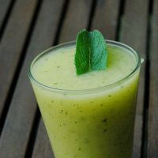
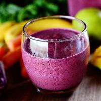
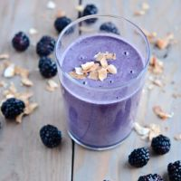
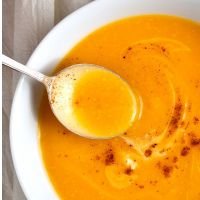
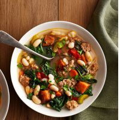
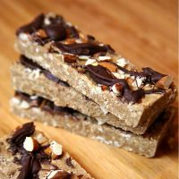
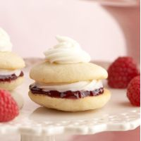
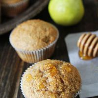

Inicio
Recetas
Tips
Contacto
SMOOTHIES
Smoothie de kale, kiwi y banana 
Smoothie de frutilla y moras 
Smoothie de moras y arándanos 
SOPAS
Sopa de zanahoria
Sopa de zapallo y puerro 
Sopa con tofu, porotos y espinaca 
POSTRES
Barritas de avena, almendra y chocolate 
Whoopie de frutilla 
Muffins de pera y miel 